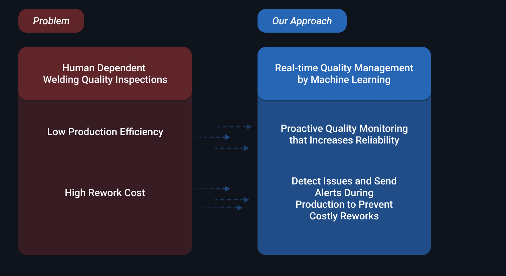

Problem Overview
The welding industry is facing low production efficiency, and high rework cost due to the fact that 90% of current inspections are highly human dependent, and defects are only noticed at the end of weld cycles.
AutoMetrics is a startup that aims to help the industry increase production efficiency and reduce rework cost by leveraging machine learning in manufacturing operations.
My role in solving the problem
I was the sole user experience and interface designer that reimagined how real time quality management(Inspection 4.0) could be utilized to help users monitor welding process and alert users to prevent high rework costs.
Other tasks including brochure design and marketing video were also fun and rewarding to work on.
I focused on two key use cases - proactive monitoring and defect alerts during production.
Understanding the problem
To understand how the software can be improved, we asked users about their experience with using the software.
Responds were categorized into 4 section:
Users’ feedbacks uncovered crucial problems:
- Main features were not comprehended by users as we anticipated, users were using the software at its minimal
Users were not relying on features like proactive monitoring and early defect notification, only basic features such as tracking project status and monitoring standard weld data were adapted.
- The Proactive Monitoring System was commonly misunderstood
The original progress bars beside each parameter did not help users understand what was being predicted and users were only seeing errors that were happening rather than being notified ahead what could potentially happen.
- Overwhelming Interface
The interface layout caused distraction, important data such as new defect alerts became less prominent.
- Defects were too vague giving users hard time to investigate
Defects that appear on Anomaly table are too vague and hard for users to investigate on potential issues.
Users are not relying on machine learning predictions, and defect notifications are not helping users trouble shoot
AutoMetrics is dedicated to provide users with reliable proactive monitoring and defect alerts that users were not able to obtain before. We had to reimagine how to provide predictions and defect notifications to users in a way where they will feel undercontrolled and feel reliable during weld cycles.
Another challenge was that all sections needed to be organized according to their purpose and relationship between one another so that when a defect appears, users can check associated sections side by side for trouble shooting.
I reframed insightful user feedbacks into HMW oppurtunities so that I have apprachable goals and ensure motivation
My 3 high level goals:
Goal 1
Let users know that proactive monitoring provides predictions, and all parameters are under monitored in real time.
Goal 2
Design a new layout making sure that related sections are placed together providing a more convenient way for users to track issues.
Goal 3
Making sure that deviations or defects always stand out and noticeable on the interface.
Step by step to the solution...
I was not familiar with the weld industry. I needed to learn how other companies were building similar products, discuss with my manager and developers who are more familiar about the technical aspect and welding industry about the trends and see what direction we should go forward with.
I paid attention to 4 most relevant things during competitive analysis:
- What layout or structure are others using?
- How to arrange information/data in different ways?
- How to use colour on complicated graphs?
- What are some patterns or common strengths?
Competitive Analysis helped me understand industry trends, what I can adopt into my design, and what to avoid.
The intention of AutoMetrics is to provide a software solution to enhance weld quality through providing users proactive monitoring and real-time defect detection.
My project manager and I discussed which components were most important to keep in order to achieve this goal while highlighting the company’s most valuable technology.
Afterwards, I was challenged to create a new layout
A layout was important to establish at the beginning to ensure that relevant components were placed together according to their function and users could effortlessly check adjacent components when defects happen.
2 things that I focused on while drafting out new layouts:
- Prioritizing on proactive monitoring
- The relationship between adjacent components, and how they help users investigate problems faster.
Competitive analysis helped me understand that in order for users to concentrate on important information easier, we can try separating content into multiple pages with tabs
After user testing and rounds of iteration, we finalized on separating the tab into 2 sections, allowing users to switch between to review live footage and record of data recording or look at proactive monitoring status.
One biggest challenge was to design components that could accurately convey the outcomes from complex machine learning.
There were limitations on how backend visualized data and the performance speed, bringing sketches to discussions helped me understand the layouts to avoid, and narrow down to potential possibilities.
Rapid design sessions allowed me to come up with lots of quick ideas to share with developers to discuss.
Adapting to the welding industry...
Competitive analysis inspired me to try combining coloured icons and text to catch users eyes when crucial defects happen.
Safety signs are distributed all around welding sites, welders are really familiar with signs. I thought of the opportunity to incorporate signs as visual signals onto our interface to help users quickly recognize all the different sections and parameters that are being monitored.
Due to the fact that this software is still being built and tested, the final design cannot be shared here at the moment. But thank you for reading through my journey :)
My reflection...
Establishing a set of goals for a project is important, it helped me stick with the most important intentions and problems especially while design can go into many directions. Do not get attached to any idea especially when experiments are not making much progress. I kept pushing myself to design new forms of the different components but no matter how I change the design, they never fit when I try to combine them all together onto the dashboard space. Later I tried a new approach which was to distribute the amount of space for each component first, Moving on to another plan not only refreshed my fogged up mindset but also fired up curiosity and the task became intriguing during the design process and opened up opportunities for problem solving. As a designer I will always be exploring new topics that I am not familiar with, finding inspiration and learning how other related companies design their products really inspired me, and kept me updated with industry standards while making my own decisions. One regret is that due to my contract length, I was not able to test the dashboard with real users, and I did not get the chance to improve based on users feedback from using the new interface.